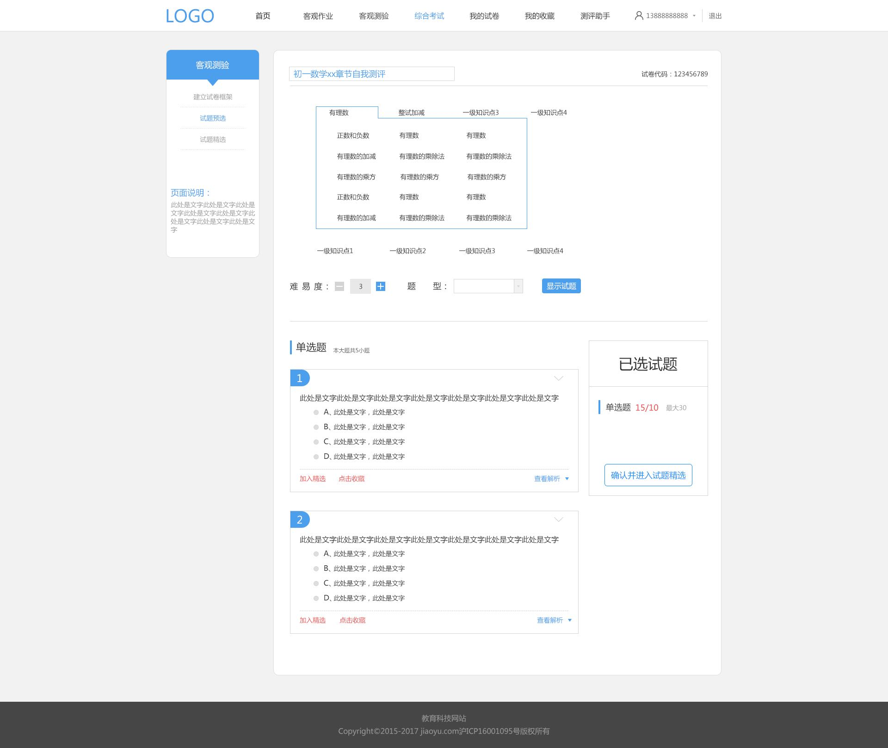

测评分析


此处名称来自于上一步“建立试卷框架”，在此可以修改，修改完后会保留进入下一步“试题精选”。
此处为一级知识点名称
此处为2级知识点名称，为单选
每次点击此按钮，下方的题目均会变化（相当于重新按照前面设定的规则从数据看中随机抓去题目）
此处要求选择所需要显示的题型（上一步“建立试卷框架”中有题目数的题型）
包含“单选题、多选题、判断题”三种题型

点击此处显示本试题的正确答案和试题解析，以弹出框形式出现，不影响下面题的格式排列。
试题解析为图文混排格式；
此文字（加入精选）默认显示为蓝色，被选中后显示为红色文字为（取消精选），再次选中则返回蓝色
此处动画显示，点击“加入精选”则有一个动画（“＋1”）显示，右侧已选试题处对应的题型后面的数字，同时＋1
再次点击“取消精选”，则有一个动画（“－1”）显示，从相反方向运动。同时右侧已选试题处对应的题型后面的数字，同时－1
点击“加入精选”，该试题会立即被加入到该份试卷的精选中，不会因为本页面整体或者部分的刷新而从试卷精选中删除
＋1、－1动画，文字变色前端需开发此交互
此文字（加入收藏）默认显示为蓝色，被选中后显示为红色文字为（取消收藏），再次选中则返回蓝色
点击“加入收藏”，该试题会立即被加入我的收藏夹中，不会因为本页面整体或者部分的刷新而从我的收藏夹中删除
文字变色前端需开发此交互

此“已选试题”框为浮动出现，一直保留在屏幕底部固定的位置（高于版权声明框），
不会因为页面的过长，而看不到；前端需开发此交互

此处显示错误，应该箭头方向向上，默认表示本题为展开状态，如果点击，则对该题题干进行隐藏；展开、隐藏前端需开发此交互
题目编号和下方显示的“加入精选”和“加入收藏”这一行内容不隐藏